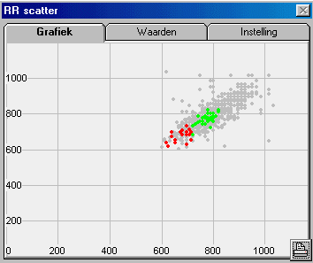
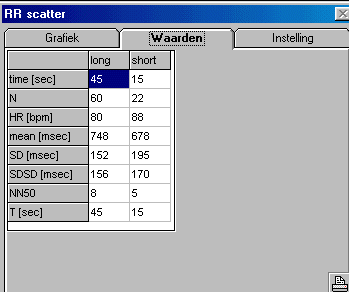
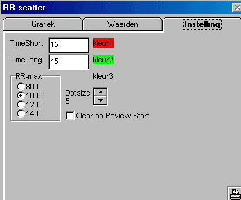

ff2, Heart Rate Analysis
M, SD, SDSD, NN50, Poincaré-plot
Deze funktie berekent een aantal parameters welke een maat zijn voor de heart rate variability.
Tevens wordt desgewenst een Poincaré plot getoond.
De berekende parameters en de Poincaré plot kunnen als een rapport worden afgedrukt.
Deze functie zelf bevat geen heart rate detector, zodat afhankelijk van het ingangssignaal de meest optimale heart rate detector kan worden toegepast.
Deze functie is zowel geschikt voor een handmatige analyse van stukjes data, zoals in onderstaande figuren is weergegeven, alsook is deze functie geschikt voor automatische analyse, omdat de "ShortTime" parameters continue als uitgangssignaal beschikbaar zijn.
|
Poincaré plot, hierin zijn 3 gebieden te onderscheiden: 1. ShortTime, hier de laatste 15 seconden (hier rood) 2. LongTime, hier de laatste 45 seconden (hier groen) 3. Alle historie (hier grijs) Wil men de historie niet zien, dat kan men deze onzichtbaar maken door deze de kleur van de achtergrong te geven. De gehele grafiek is vrij schaalbaar en verplaatsbaar. Middels de snelknop print kan een rapport worden afgedrukt, waarin patientgegevens, Poincaré plot en bijbehorende numerieke gegevens worden afgedrukt. Na een print-preview is de Poincaré plot ook als een bestand op de PC aanwezig. |
 |
|
 |
Voor de berekening van de heart rate varaiability parameters worden enkel de shorttime en de longtime tijdsegementen gebruikt. In dit geval bestrijkt het longtime segment de laatste 45 seconden en het shorttime segment de laatste 15 seconden. De laatste 15 seconden doen dus mee in zowel de shorttime periode als in de longtime periode. Is dit goed ?? Middels de snelknop print kan een rapport worden afgedrukt, waarin patientgegevens, Poincaré plot en bijbehorende numerieke gegevens worden afgedrukt. |
|
Middels dit scherm kunnen de eigenschappen van de grafiek en de meetperioden worden ingesteld. De instellingen worden bij het meetprotocol bewaard. Als het vakje "Clear on Review Start" is aangekruist, wordt in de review mode bij iedere nieuwe start van het display de grafiek gewist, op deze manier vertegenwoordigen de grijze punten in de grafiek precies dat deel dat ook in de signalen zichtbaar is. Door op een label kleur te klikken, kan de kleur van de bijbehorende punten worden ingesteld. |
 |
Time
De daadwerkelijke tijd (in sec) waarover de parameters zijn bepaald.
N
Het aantal (geldige) hartslagen in de opgegegeven periode.
HR
De gemiddelde hartslag in beats per minute (bpm).
Mean
De gemiddelde lengte van het RR-interval in msec.
SD
De standaard deviatie van de RR-intervallen in msec.
SDSD
De standaard deviatie van de verschillen tussen opeenvolgende RR-intervallen (SD of delta RR) in msec.
NN50
Het aantal paren van opeenvolgende RR-intervallen, in de opgegeven periode, welke meer dan 50 msec van elkaar verschillen. Het kriterium van 50 msec kan ook op een andere waarde worden ingesteld, via het tabblad "Instelling".
Met deze parameter kunnen grote verschillen tussen opeenvolgende hartslagen worden herkend.
T
De gewenste meettijd (in sec) voor de opgegeven periode. (Indien onvoldoende hartslagen beschikbaar zal de parameter "Time" korter zijn.)
Zet "Clear on Review Start" aan.
Stel de gewenste ShortTime en LongTime in.
Het langstdurende tijdsvenster vormt de referentie van de berekeningen, d.w.z. de laatste 15 seconden (de waarde van de shorttime in bovenstaand voorbeeld, kan worden ingesteld) zijn gerekend vanaf het einde van het langste tijdvenster. Idem voor de "longtime".
Zorg nu dat het gewenste stuk data goed zichtbaar is in het langste tijdvenster. Hiervoor kan handig gebruik worden gemaakt van het rechter-muis-menu "Start Here" en "Finish Here".
Zodra het juiste signaal goed zichtbaar is, geven de Poincaré plot de tabel de juiste waarden over het gewenste gebied.
|
1 = RR |
RR-interval in msec |
|
2 = RR-valid |
1 als er een nieuw (geldig) RR-interval beschikbaar is, anders 0 |
|
1 = Mean RR [msec] |
Gemiddelde RR-interval over de ShortTime |
|
2 = SD [msec] |
Standard Deviation van de RR-intervallen over de ShortTime |
|
3 = NN50 |
Het aantal paren van opeenvolgende RR-intervallen, in de opgegeven periode, welke meer dan 50 msec van elkaar verschillen. Het kriterium van 50 msec kan ook op een andere waarde worden ingesteld, via het tabblad "Instelling". |
|
4 = SDSD [msec] |
De standaard deviatie van de verschillen tussen opeenvolgende RR-intervallen (SD of delta RR) in msec, over de ShortTime |
Nadat een preview van het rapport is getoond, is de Poincaré plot ook beschikbaar als bitmap:
<directory mid_org.exe> F50_P1.bmp
... literatuur vermeldingen en andere documenten
© Copyright Instrumentele Dienst 1999
SM/GvV, last updated 22-09-1999